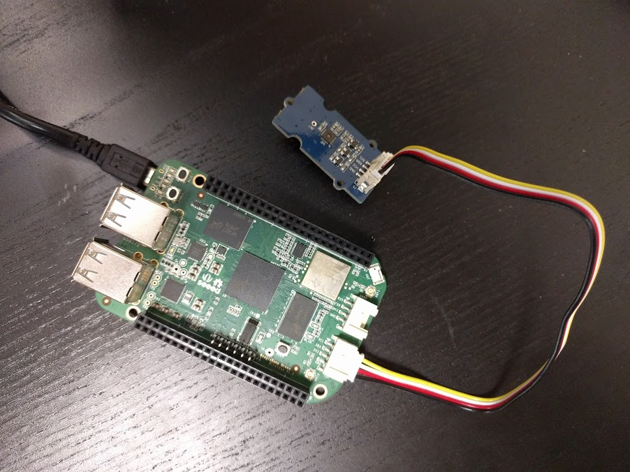
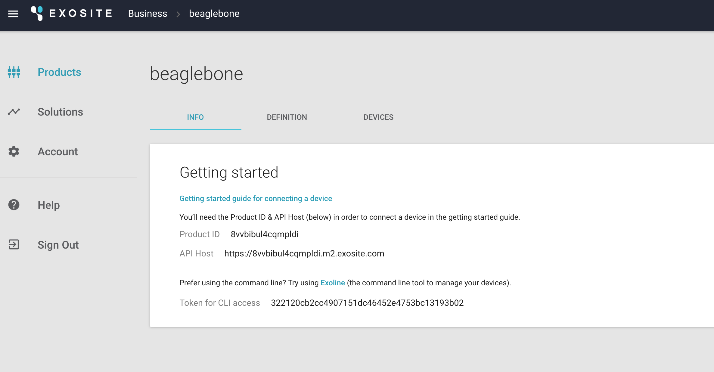
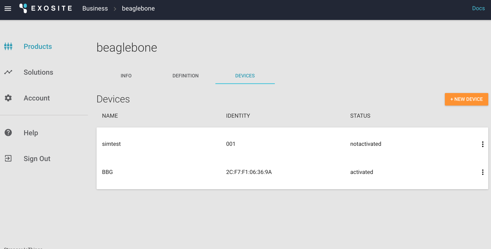
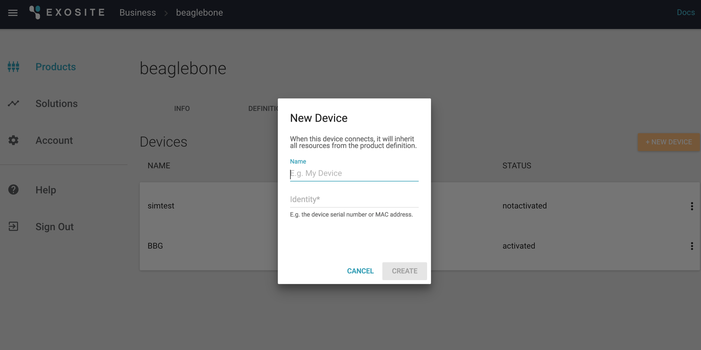

BeagleBone Green Wireless Setup
This portion of the tutorial will help you get your SeeedStudio BeagleBone Green Wireless (BBG) connected to the solution you have already deployed.
Requirements
Hardware Setup
SeeedStudio BeagleBone Green Wireless
https://beagleboard.org/green-wireless
BBG is a low-cost, open-source, community-supported development platform for developers and hobbyists. It is a joint effort by BeagleBoard.org and Seeed Studio. It is based on the classical open-source hardware design of BeagleBone Black and has been developed into this differentiated version. The BBG includes two Grove connectors, making it easier to connect to the large family of Grove sensors. The onboard HDMI is removed to make room for these Grove connectors.
http://wiki.seeed.cc/BeagleBone_Green/
Software Setup
BeagleBone Green
The BBG comes standard with a useful set of software that will enable you to rapidly develop your IoT solution.
Debian 8.5
Python
Node.js
Node-RED (http://nodered.org/)
Gateway Engine with GMQ
ExositeReady™ Gateway Engine (GWE) is a Python-based application framework that runs on embedded Linux gateway devices. GWE makes it easy to connect devices to a gateway and write applications on that gateway to interact with Exosite web services, including the Murano platform, Murano Edge, or both.
In this example you will use GWE to allow sensors to communicate with the Murano platform. Installation instructions are provided in a later section.
GWE will be used to provision or activate your physical hardware.
BeagleBone Setup
Plug in your BBG and sensor as shown below:

Using a smartphone or computer:
Go to your Wi-Fi settings.
Connect to the Wi-Fi signal named "Beaglebone < >".
Follow the instructions on the screen to connect the BBG to your Wi-Fi network.
Write down your BBG's IP address when the screen below is shown:

The BBG does not come with all the tools needed for reading sensors connected to it. Some initial setup is required to send sensor data to Exosite.
http://beagleboard.org/static/beaglebone/latest/README.htm
If at some point you want to start over and need to reset your device, the software and steps can be found here:
[http://elinux.org/Beagleboard:BeagleBoneBlack_Debian#microSD.2FStandalone:_.28iot.29_.28BeagleBone.2FBeagleBone_Black.2FBeagleBone_Green.29](http://elinux.org/Beagleboard:BeagleBoneBlack_Debian#microSD.2FStandalone:_.28iot.29_.28BeagleBone.2FBeagleBone_Black.2FBeagleBone_Green.29)
Now, to connect directly to the BBG, you can use ssh. At this point you can update the board to install a few needed libraries. The password for the BBG will be displayed after you initiate the ssh connection.
$ ssh debian@<IP Address>
$ sudo apt-get update && sudo apt-get upgrade
After the upgrade completes, please restart the BBG before continuing the setup process.
$ sudo reboot
After the reboot, ssh back into the BBG to finish upgrading libraries.
$ ssh debian@<IP Address>
$ sudo pip install Adafruit_BBIO --upgrade
$ sudo pip install pyserial --upgrade
$ sudo apt-get install python-smbus
Install GWE with GMQ on BeagleBone
Install GWE on the BBG.
What is GWE?
In the context of IoT, a "gateway" can be loosely defined as any device that serves as a communication broker for other devices. Gateways, in this context, often bridge the gap between an IoT platform (Exosite) and some collection of devices that do not possess the ability to communicate on the Internet. Sometimes the devices generating the data you want on the Internet are not devices, per se, but data from other networks the gateway can access such as modbus and CAN. Either way, the purpose of any gateway is to move local data to an external agent on the Internet.
Since using gateways is common throughout so many industrial applications, Exosite created Gateway Engine as an out-of-the-box developer and deployment tool for Internet-connected gateways.
For more information, check out the GWE docs site [http://docs.exosite.com/gwe/](http://docs.exosite.com/gwe/).
First, write down the MAC address of the BBG for adding the device later.
$ ssh <USER>@<GATEWAY_IP> "ifconfig -a"
To download the latest version of the Public Release of GWE, follow these steps:
Navigate to the Gateway Engine Release Packages section and follow the instructions to download GWE. Run these commands to copy GWE to your gateway (the actual filename in the command may differ):
$ ssh <USER>@<GATEWAY_IP> "mkdir /opt"
$ scp GatewayEngine.v1-1-2.tar.gz <USER>@<GATEWAY_IP>:/opt
At this point, you have downloaded the latest release of GWE and copied it to your gateway. Run this command to untar the release package and install GWE onto your gateway:
$ ssh <USER>@<GATEWAY_IP>
$ cd /opt
$ tar zxvf GatewayEngine.v1-1-2.tar.gz
$ cd gateway-engine
$ ./install.sh"
Note: In some Linux environments, you will need to use Super-User permissions to run the installer. In this case, replace the ./install.sh command to:
$ sudo ./install.sh
Once the installation completes, you will need to configure GWE for your IoT solution and Exosite account. This will require one piece of information from your Murano account.
In your Murano account, navigate to your Product and click on the INFO tab. Copy the Product ID and use it in the commands, below, in place of
$ ssh <USER>@<GATEWAY_IP> "gwe --set-product-id <PRODUCT_ID> --set-iface wlan0""
Example:
$ ssh <USER>@<GATEWAY_IP> "gwe --set-product-id dubhxzv0r4e1m7vj --set-iface eth0"``
To complete the installation you will need to reboot the gateway. To reboot, you can toggle the power or use the following command:
$ ssh <USER>@<GATEWAY_IP> "reboot"
At this point in the tutorial, your device’s software is up to date and ready to connect.
Add a Device
Now you will add your device to your product in Murano
In Murano select Products.

Select your product.
Select DEVICES.

Click "+ NEW DEVICE."

Add a device with a Name and Identity. The Name can be any string to help remember which device it is. The Identity should be the MAC address of your BBG.
Enable Serial Number which is the MAC Address of the Device
At this point, you will need to activate your device by executing a command in GWE.
GWE Activation
The steps to activate your BBG using GWE can be found here: http://docs.exosite.com/gwe/getting_started/
A summarized version of the steps are included here:
$ ssh debian@<IP Address>
$ sudo gwe --set-product-id <Product ID> --set-uuid <MAC Address>
$ sudo reboot
Coding the sensors
The BBG needs to be able to talk to the "Temp/Humidity" sensor.
In a web browser, type in the IP address of the BBG in the following format:
http://xxx.xxx.xxx.xxx:3000/
Copy the code from TH02.py into the code area and click run. This will read data from the "temperature" and "humidity" sensor and send the data to your Murano solution.